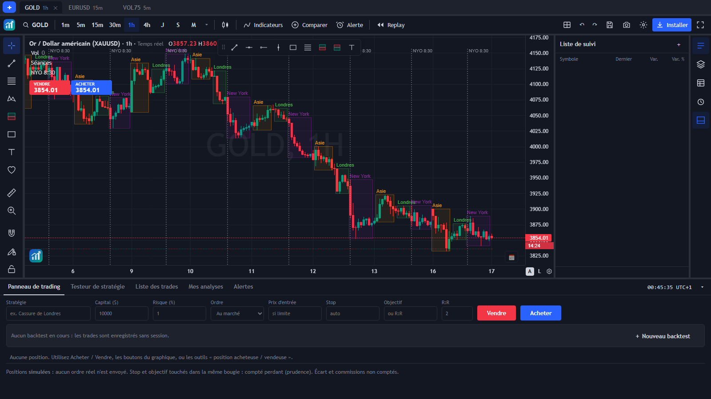

1 mois
Pour découvrir
3 000F CFA
soit 3 000 F par mois
- Toutes les fonctions
- 148 actifs en temps réel
- Replay et backtest
Forex, or, indices, indices synthétiques et crypto. Des outils de dessin complets, toutes les unités de temps, le replay et le backtest pour mesurer votre stratégie. Installé chez vous, rapide et privé.

Tarifs
Toutes les fonctions sont incluses dans chaque formule. Une clé = un ordinateur.
Pour découvrir
3 000F CFA
soit 3 000 F par mois
Pour progresser
9 000F CFA
soit 3 000 F par mois
Pour s'installer
18 000F CFA
soit 3 000 F par mois
Le meilleur prix
24 000F CFA
soit 2 000 F par mois
12 000 F d'économie
Pour commander, cliquez sur votre formule : un message au support s'ouvre, nous vous envoyons le moyen de paiement (Mobile Money) puis votre clé. Le paiement en ligne avec clé automatique arrive bientôt.
Une interface claire, pensée pour les traders, qui fonctionne sur votre propre ordinateur.
37 paires forex, l'or, l'argent, le platine, 13 indices dont le DXY, 52 indices synthétiques ouverts 7 j/7 et 42 cryptos. Mises à jour à la seconde.
Lignes, canaux, Fibonacci, Gann, motifs, formes, textes, positions acheteuse et vendeuse. Touche Maj pour une ligne parfaitement droite.
De 1 seconde à 1 an : secondes, minutes, heures, jours, semaines, mois. Créez aussi vos propres unités (45 min, 3 h, 3 mois…).
Rejouez le marché bougie par bougie, prenez vos trades, puis lisez votre taux de réussite, votre espérance et votre drawdown par stratégie.
Ouvrez plusieurs actifs en onglets avec le « + », ou affichez plusieurs graphiques côte à côte. Tout est retrouvé à la prochaine ouverture.
Posez une alerte sur un niveau : son et notification Windows dès que le prix l'atteint.
Enregistrez vos analyses avec leur capture, classez-les par stratégie et suivez ce qui fonctionne vraiment.
Le logiciel tourne sur votre ordinateur : vos dessins et vos backtests restent chez vous. Positions simulées : aucun ordre réel n'est passé.
Trois étapes, sans rien installer d'autre.
Choisissez Windows ou Mac, puis double-cliquez sur le fichier. L'application s'ouvre toute seule.
À la première ouverture, cliquez sur « Essayer gratuitement » : toutes les fonctions, sans paiement.
Choisissez votre formule, recevez votre clé, collez-la et cliquez sur « Activer » : elle se lie à votre ordinateur.
Gratuit à télécharger, essai gratuit de 2 jours dès la première ouverture. Ensuite, une clé d'activation est nécessaire pour continuer.
Windows 10 et 11 · un seul fichier, environ 50 Mo
Télécharger pour Windows Si Windows affiche « Windows a protégé votre ordinateur » : « Informations complémentaires », puis « Exécuter quand même ».Mac Intel et Apple M1, M2, M3, M4 · une seule application
Télécharger pour Mac La première fois : clic droit sur l'application, puis « Ouvrir ».Il faut une connexion internet pour recevoir les cotations en temps réel.
Non. Vous téléchargez un seul fichier et vous double-cliquez dessus. Rien d'autre à installer.
Oui, la même application fonctionne sur les deux types de Mac.
Oui, pour recevoir les cotations en temps réel, et une fois au moment d'activer votre clé ou de démarrer l'essai gratuit.
À la première ouverture, cliquez sur « Essayer gratuitement » : toutes les fonctions pendant 2 jours, sans paiement. L'essai n'est possible qu'une fois par ordinateur. Ensuite, achetez une clé pour continuer.
Non : à la première activation, la clé se lie à votre ordinateur et ne fonctionne sur aucun autre. Pour un autre ordinateur, il faut une autre clé.
Non. Les positions sont simulées : vous vous entraînez et mesurez votre stratégie sans risquer d'argent.
Vos dessins, analyses et backtests restent sur votre ordinateur. À chaque ouverture, le logiciel envoie seulement un identifiant anonyme de l'ordinateur (sans nom ni adresse e-mail), pour vérifier la clé ou l'essai et compter les utilisateurs actifs.
Un souci avec votre clé, une question sur le logiciel ? Écrivez au support, nous vous répondons rapidement.